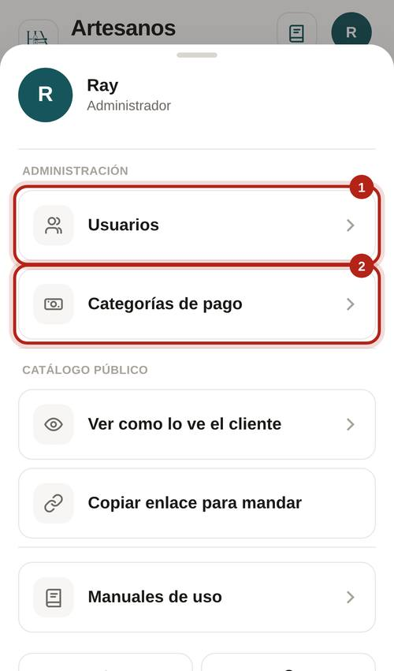
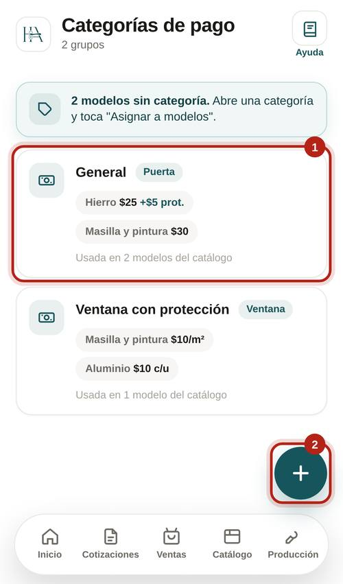
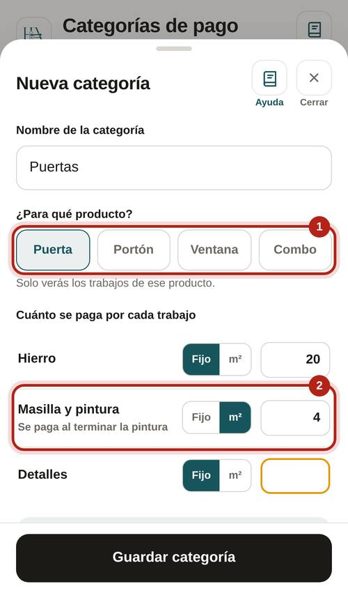
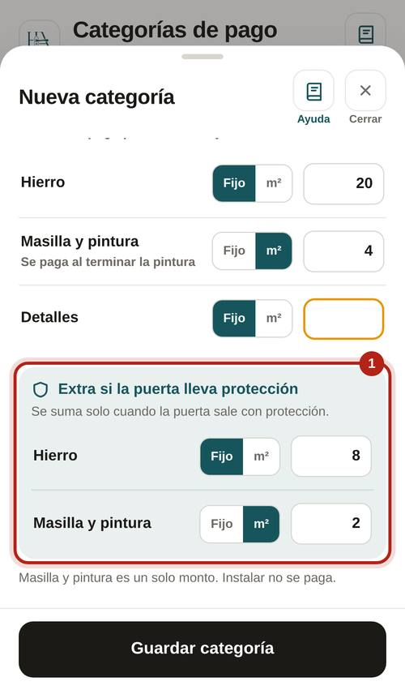
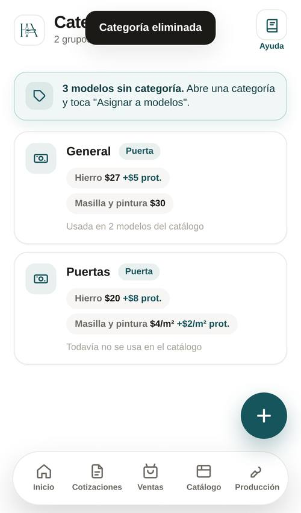
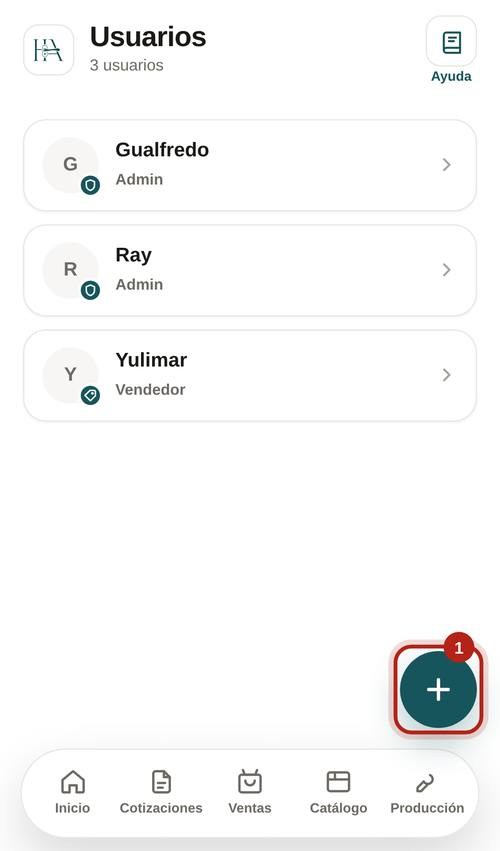
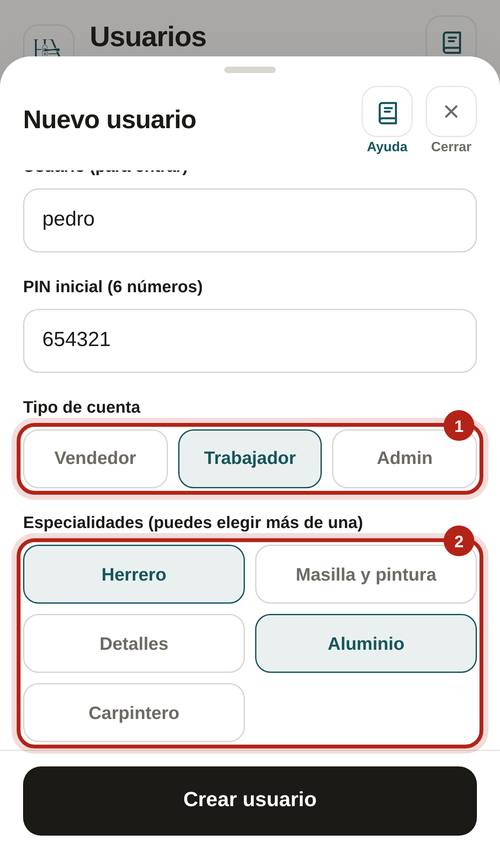
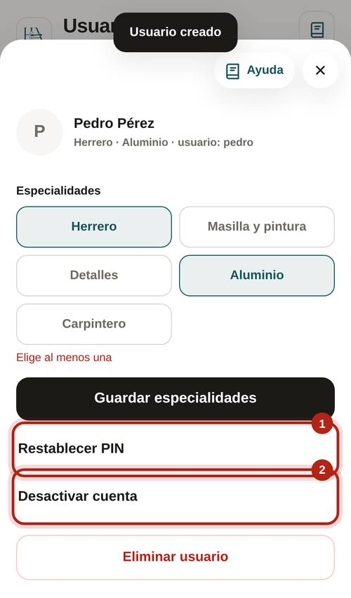

Lo que se le paga al taller por cada trabajo de un producto. Cada modelo del catálogo tiene una.

Puerta, Portón, Ventana o Combo. Solo verás los trabajos de ese producto.
Un renglón por trabajo. Elige Fijo (por pieza) o m² (por metro cuadrado). Masilla y pintura es un solo monto: se paga al terminar la pintura.

Va en su recuadro aparte. Se suma en hierro y en masilla y pintura solo cuando la puerta sale con protección.

Abre la categoría y toca "Asignar a modelos". El paso a paso está en el manual de Catálogo.
Los modelos que la usaban quedan sin categoría y te sale el aviso para darles otra.

Todas las personas que entran a la app.

El PIN son 6 números; la persona lo puede cambiar después. Tipo: Vendedor, Trabajador o Admin.
Puede tener varias. Solo le sale el trabajo de sus especialidades.

"Restablecer PIN" si se le olvidó. "Desactivar cuenta" si ya no trabaja: no entra más, pero su historial queda.

En Inicio, "Pendientes":
En Producción, si nadie tiene una especialidad, sale un enlace para dársela a un trabajador.